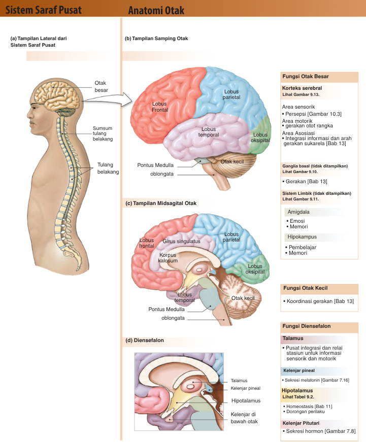

Sistem Saraf
Memahami struktur neuron, mekanisme impuls saraf, gerak refleks, sistem saraf pusat & tepi, serta gangguan yang dapat terjadi.
Sistem Saraf – Biologi Kelas 11 SMA | Mencakup: neuron, neuroglia, mekanisme impuls, gerak refleks, SSP & SST
Untuk bereaksi terhadap perubahan lingkungan (stimulus), tubuh manusia memerlukan tiga komponen utama yang bekerja sinergis: reseptor yang mendeteksi stimulus, sistem saraf yang mengolah dan meneruskan informasi, serta efektor yang memberikan respons.
| Komponen | Fungsi Utama | Cara Kerja | Kecepatan Respons |
|---|---|---|---|
| Sistem Saraf | Mendeteksi stimulus, menghantarkan & mengolah impuls | Sinyal listrik (potensial aksi) & kimia (neurotransmitter) | Sangat cepat (milidetik) |
| Sistem Endokrin | Mengatur metabolisme, pertumbuhan, reproduksi | Hormon diedarkan melalui darah | Lambat (detik–jam), efek lama |
| Sistem Indera | Menerima & mengubah rangsangan menjadi impuls | Reseptor khusus di organ indera | Bergantung jenis stimulus |
Jaringan saraf tersusun atas dua jenis sel utama: neuron (penghantaran impuls) dan neuroglia (mendukung & melindungi neuron). Neuron tidak dapat membelah diri, sehingga kerusakannya bersifat permanen.
A. Struktur Neuron

Gambar 1. Struktur Sel Saraf (Neuron) | Sumber: Silverthorn (2016: 254)
| Bagian | Nama Lain | Fungsi |
|---|---|---|
| Dendrit | – | Menerima impuls dari reseptor/neuron lain → badan sel. Luas permukaan diperluas oleh spina dendritik (penting untuk memori & belajar). |
| Badan Sel | Perikarion/Soma | Pusat metabolisme; mengandung nukleus & badan Nissl (RE kasar) untuk sintesis protein. |
| Akson | Neurit | Menghantarkan impuls dari badan sel ke neuron lain/efektor. Ujung awal = akson hillock; ujung akhir = terminal akson. |
| Selubung Mielin | – | Lapisan lipoprotein yang mempercepat penghantaran impuls (konduksi saltatori). Dibentuk oleh sel Schwann (SST) & oligodendrosit (SSP). |
| Nodus Ranvier | – | Celah antara segmen mielin; tempat impuls "melompat" pada konduksi saltatori. |
| Sel Schwann | – | Membentuk mielin di SST & mendukung regenerasi akson rusak. |
| Terminal Akson | Tombol sinapsis | Tempat penyimpanan & pelepasan neurotransmitter ke celah sinapsis. |
| Sinapsis | – | Daerah hubungan fungsional antar neuron; memungkinkan impuls diteruskan melalui neurotransmitter. |
B. Neuroglia (Sel Penyokong)
Jumlah neuroglia ~10× lebih banyak dari neuron. Tidak menghantarkan impuls, tetapi vital untuk mendukung fungsi neuron.
| Jenis | Lokasi | Fungsi Spesifik |
|---|---|---|
| Astrosit | SSP | Sel bintang; menyediakan nutrisi; membentuk sawar darah-otak (blood-brain barrier). |
| Oligodendrosit | SSP | Membentuk selubung mielin di SSP; satu sel dapat menyelubungi beberapa akson. |
| Mikroglia | SSP | Sistem imun otak; sel fagosit yang membuang debris seluler dan patogen. |
| Sel Ependimal | SSP | Menghasilkan & mengatur cairan serebrospinal (CSS). |
| Sel Schwann | SST | Membentuk mielin di SST; mendukung regenerasi akson rusak. |
| Sel Satelit | SST | Mengelilingi badan sel di ganglion SST; mengatur lingkungan ion sekitar neuron. |

Gambar 2. Struktur Neuron Bermielin dengan Sel Schwann dan Nodus Ranvier | Sumber: Ruang Guru
C. Pengelompokan Neuron
Berdasarkan Fungsi (Fisiologis):
🔵 Neuron Sensorik (Aferen)
Menghantarkan impuls dari reseptor → SSP. Arah: Perifer → SSP.
🟢 Interneuron (Asosiasi)
Mengolah & mengintegrasikan informasi di dalam SSP. Terbanyak di SSP.
🔴 Neuron Motorik (Eferen)
Menghantarkan perintah dari SSP → efektor (otot/kelenjar). Arah: SSP → Perifer.
Berdasarkan Bentuk (Struktural): Multipolar (1 akson, banyak dendrit – paling umum), Bipolar (1 akson, 1 dendrit – organ indera), Unipolar/Pseudounipolar (1 juluran bercabang – neuron sensorik ganglion), Anaksonik (tidak ada akson – interneuron tertentu).

Gambar 3. Pengelompokan Neuron Berdasarkan Bentuk (Fungsional & Struktural) | Sumber: Silverthorn (2016: 254)
A. Potensial Membran & Potensial Aksi
Saat istirahat, potensial membran = −70 mV (potensial istirahat). Jika rangsangan melebihi ambang batas −55 mV, potensial aksi terbentuk.
| Tahap | Nama | Mekanisme |
|---|---|---|
| 1 | Polarisasi (Istirahat) | Membran −70 mV; kanal Na⁺ & K⁺ tertutup. Na⁺ banyak di luar, K⁺ banyak di dalam. Pompa Na⁺/K⁺ aktif (3 Na⁺ keluar, 2 K⁺ masuk). |
| 2 | Depolarisasi | Stimulus > −55 mV → kanal Na⁺ terbuka → Na⁺ masuk → membran naik ke +30 mV (overshoot). Prinsip: semua-atau-tidak (all-or-nothing). |
| 3 | Repolarisasi | Kanal Na⁺ inaktif → refraksi absolut. Kanal K⁺ terbuka → K⁺ keluar → membran kembali negatif (~−70 mV). |
| 4 | Hiperpolarisasi | K⁺ terlalu banyak keluar → membran mencapai −80 hingga −90 mV → refraksi relatif. Pompa Na⁺/K⁺ memulihkan distribusi ion (butuh ATP). |

Gambar 4. Grafik Perubahan Potensial Membran selama Potensial Aksi | Sumber: Ruang Guru

Gambar 5. Ilustrasi Tahap-Tahap Potensial Aksi pada Membran Sel Saraf | Sumber: Ruang Guru

Gambar 6. Perbandingan Akson Bermielin dan Tidak Bermielin | Sumber: Ruang Guru
B. Penghantaran Melalui Sinapsis Kimia
- 1Potensial aksi tiba di terminal akson → kanal Ca²⁺ terbuka → Ca²⁺ masuk.
- 2Ca²⁺ memicu vesikel sinapsis bergabung dengan membran pra-sinapsis (eksositosis) → neurotransmitter dilepaskan ke celah sinapsis (~20–40 nm).
- 3Neurotransmitter berdifusi & berikatan dengan reseptor membran post-sinapsis → membuka kanal ion → EPSP (eksitatori) atau IPSP (inhibitori).
- 4Penghentian sinyal: degradasi enzimatis (mis. asetilkolinesterase), reuptake ke terminal pra-sinapsis, atau difusi menjauhi celah.
C. Jenis Neurotransmitter Utama

Gambar 7. Peta Distribusi Neurotransmitter di Otak | Sumber: Silverthorn (2016: 319)
| Neurotransmitter | Jenis | Fungsi Utama & Implikasi Klinis |
|---|---|---|
| Asetilkolin (ACh) | Eks/Inh | Penghantaran ke otot rangka, memori, tidur. Defisit → Alzheimer. |
| Dopamin | Eksitatori | Gerak motorik, motivasi, sistem reward. Defisit → Parkinson. Kelebihan → Skizofrenia. |
| Serotonin | Eks/Inh | Suasana hati, tidur, nafsu makan. Defisit → depresi. Target SSRI. |
| Norepinefrin | Eksitatori | Kewaspadaan, denyut jantung, fight-or-flight. Defisit → depresi. |
| GABA | Inhibitori | Mengurangi eksitabilitas neuron. Disfungsi → epilepsi, kecemasan. |
| Glutamat | Eksitatori | Memori & belajar (LTP). Kelebihan (eksitotoksisitas) → kerusakan neuron saat stroke. |
| Aspek | Gerak Sadar | Gerak Refleks |
|---|---|---|
| Definisi | Direncanakan & dilakukan secara sadar | Cepat, tiba-tiba, tidak disadari |
| Pusat Pengolahan | Korteks serebri (otak besar) | Sumsum tulang belakang (STB) |
| Jenis Gerak | Volunter (disengaja) | Involunter (otomatis) |
| Kecepatan | Lebih lambat | Sangat cepat (~20 ms) |
| Contoh | Menulis, berjalan, menyetir | Menarik tangan dari api, refleks lutut |
Bagan Alur Impuls
Rangsangan → Reseptor → Saraf Sensorik → STB → Otak (Korteks) → STB → Saraf Motorik → Efektor → Reaksi
Rangsangan → Reseptor → Saraf Sensorik → Interneuron (STB) → Saraf Motorik → Efektor → Reaksi Refleks
Komponen Busur Refleks
- 1Reseptor – mendeteksi stimulus (mis. nosiseptor di kulit).
- 2Neuron Aferen (Sensorik) – membawa impuls ke STB melalui akar dorsal.
- 3Interneuron – mengolah impuls di dalam STB & menghubungkan neuron sensorik–motorik.
- 4Neuron Eferen (Motorik) – membawa perintah ke efektor melalui akar ventral.
- 5Efektor – otot/kelenjar yang melaksanakan respons.
SSP terdiri dari otak dan sumsum tulang belakang (medula spinalis), dilindungi oleh tengkorak/tulang belakang, tiga lapisan meninges (duramater, araknoid, piamater), dan cairan serebrospinal (CSS).
A. Serebrum (Otak Besar) – 85% massa otak

Gambar 8. Anatomi Otak (Sistem Saraf Pusat) | Sumber: Silverthorn (2016: 310)
| Lobus | Letak | Fungsi Utama |
|---|---|---|
| Frontal | Dahi | Kognisi tinggi (perencanaan, pengambilan keputusan), produksi bicara (Area Broca), kontrol motorik sadar. |
| Temporal | Pelipis | Pendengaran, pemahaman bahasa (Area Wernicke), memori deklaratif, pengenalan wajah. |
| Parietal | Ubun-ubun | Persepsi somatosensorik (sentuhan, suhu, nyeri), penalaran spasial, integrasi multisensor. |
| Oksipital | Belakang | Pemrosesan visual: warna, bentuk, gerak. Kerusakan → kebutaan kortikal. |
B. Diensefalon
🔵 Talamus
Pusat relay & integrasi informasi sensorik. Semua impuls sensorik (kecuali penciuman) melewati talamus sebelum ke korteks.
🟢 Hipotalamus
"Master regulator" homeostasis: suhu, lapar, haus, tidur, stres, reproduksi. Menghubungkan SSP & sistem endokrin melalui hipofisis.
🌙 Kelenjar Pineal
Menghasilkan melatonin → mengatur ritme sirkadian (siklus tidur-bangun 24 jam).
👑 Kelenjar Hipofisis
"Master gland" sistem endokrin; menghasilkan berbagai hormon tropik yang mengatur kelenjar lain.
C. Batang Otak
| Bagian | Fungsi |
|---|---|
| Mesensefalon | Refleks visual & auditori; memelihara kesadaran; mengandung substansia nigra (penghasil dopamin). |
| Pons Varoli | Jembatan antara serebelum kiri-kanan; pusat pernapasan; lintasan saraf kranial V, VI, VII, VIII. |
| Medula Oblongata | Pusat vital otonom: denyut jantung, pernapasan, tekanan darah. Refleks menelan, batuk, bersin, muntah. Kerusakan → fatal. |
D. Serebelum (Otak Kecil)
Mengandung >50% total neuron otak. Tidak memulai gerakan, tetapi sebagai koordinator: menghaluskan gerak motorik sadar, menjaga keseimbangan & postur, dan memungkinkan otomatisasi gerak berulang (seperti bersepeda).
E. Sumsum Tulang Belakang (Medula Spinalis)
Menghantarkan informasi sensorik (naik/asendens) dari tubuh ke otak dan perintah motorik (turun/desendens). Juga pusat koordinasi gerak refleks. Struktur irisan melintang: substansi putih (luar, traktus), substansi abu (dalam, bentuk H), akar dorsal (sensorik), akar ventral (motorik).
SST mencakup semua jaringan saraf di luar otak & STB. Terdiri dari divisi aferen (sensorik: perifer → SSP) dan eferen (motorik: SSP → efektor).
Saraf Kranial (12 Pasang)
| No. | Nama | Sifat | Fungsi Utama |
|---|---|---|---|
| CN I | Olfaktori | Sensoris | Penciuman → korteks olfaktori |
| CN II | Optikus | Sensoris | Penglihatan → korteks visual |
| CN III | Okulomotor | Motoris | Gerak bola mata; ukuran pupil & lensa |
| CN V | Trigeminal | Campuran | Sensasi wajah; otot pengunyah |
| CN VII | Fasial | Campuran | Ekspresi wajah; pengecap 2/3 anterior lidah |
| CN VIII | Vestibulokoklear | Sensoris | Pendengaran (koklear) & keseimbangan (vestibular) |
| CN X | Vagus | Campuran | Saraf terluas; organ toraks & abdomen; parasimpatik utama |
| CN XII | Hipoglosal | Motoris | Semua gerak otot lidah |
Saraf Simpatik vs Parasimpatik
| Organ | Saraf Simpatik (fight-or-flight) | Saraf Parasimpatik (rest-and-digest) |
|---|---|---|
| Pupil mata | Dilatasi (melebar) | Konstriksi (menyempit) |
| Jantung | Denyut meningkat (takikardia) | Denyut menurun (bradikardia) |
| Saluran napas | Bronkodilatasi | Bronkokonstriksi |
| Lambung & Usus | Menghambat peristaltik | Menstimulasi pencernaan |
| Kandung kemih | Relaksasi dinding; menahan urin | Kontraksi dinding; pengeluaran urin |
| Gangguan | Penyebab Utama | Gejala Khas | Dampak pada Respons Tubuh |
|---|---|---|---|
| Alzheimer | Plak beta-amyloid, kematian sel otak | Penurunan daya ingat progresif, disorientasi | Interneuron korteks tidak mampu menyimpan informasi |
| Parkinson | Matinya sel penghasil dopamin di substansia nigra | Tremor, kekakuan, bradikinesia | Sinyal motorik ke efektor terganggu |
| Epilepsi | Disfungsi reseptor GABA, trauma kepala | Kejang berulang, hilang kesadaran | Impuls menyebar tidak terkontrol di SSP |
| Stroke | Sumbatan/pecahnya pembuluh darah otak | Kelumpuhan satu sisi, gangguan bicara | Area otak rusak tidak meneruskan impuls motorik/sensorik |
| Multiple Sclerosis | Degenerasi mielin di SSP (autoimun) | Kelemahan otot, gangguan koordinasi | Konduksi saltatori gagal → impuls melambat/terputus |
| Meningitis | Infeksi bakteri/virus pada meninges | Demam tinggi, sakit kepala hebat, kaku leher | Peradangan menekan jaringan saraf |
| Poliomielitis | Infeksi Poliovirus pada neuron motorik | Kelumpuhan lemas (flaccid) | Neuron motorik rusak → efektor tidak merespons |